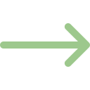

Psicoterapia Individual
En ocasiones, nos
encontramos abrumados, tristes, desesperanzados, estresados o afligidos, lo
cual es parte de la experiencia humana. Sin embargo, cuando estos sentimientos
se prolongan y afectan diferentes áreas de nuestra vida (social, personal, afectiva,
laboral y familiar), la terapia psicológica individual puede ser una
alternativa eficaz para abordar estas problemáticas.
La terapia individual
ofrece una reducción efectiva de problemáticas psicológicas como la depresión y
la ansiedad, así como de los síntomas asociados, como el dolor, el cansancio y
los problemas de sueño, entre otros. Además, la psicoterapia tiene un impacto
positivo en la salud emocional y física, lo que conlleva una mejora general en
el estado de salud de las personas.
